“serverless”
serverless初探
1. 介绍
Serverless（无服务器架构）指的是由开发者实现的服务端逻辑运行在无状态的计算容器中，它由事件触发， 完全被第三方管理，其业务层面的状态则被开发者使用的数据库和存储资源所记录。
Serverless 是云原生技术发展的高级阶段，使开发者更聚焦在业务逻辑，而减少对基础架构的关注。
2.发展
2.1 物理机/虚拟机
21世纪初，大部分服务还是以单点物理机或者虚拟机作为底座服务，开发人员面对的是购买的服务器裸机，需要自己安装操作系统，部署应用，自己维护，自己监控。
建房子就要从打地基开始，到买材料买水泥沙子，打井都是自己动手
2.2 IAAS
快速申请自己需要的服务器资源，不用再自己购买物理机来运维，而且根据自己的实际需要进行付费，这也是云时代的开篇，主要解决了
- 降低劳动力成本：减少了企业本身雇佣 IT 人员的成本
- 降低风险：不用再像自己运维物理机那样，担心各种意外风险，EC2 有主机损坏，再申请一个就好了。
- 降低基础设施成本：可以按小时、周、月或者年为周期租用 EC2。
- 扩展性：不必过早的预期基础设施采购，因为通过云厂商可以很快的获取。
- 节约时间成本：快速的获取资源开展业务实验。
本质上就是基础设施的外包，不需要自己动手打地基 买建材，但是里面的建设都需要自己动手
2.3 PAAS
提供操作系统安装、监控和服务发现等功能，用户只需要构建和部署自己的应用即可，不需要接触应用的底层环境本身。
里面的建设设施也不需要自己动手安装，开箱即用
2.4 serverless
- 上面我们关注的其实还是房子，比如房子的大小，装修如何（CPU，内存，操作系统，磁盘大小，），也就是是对应的有服务器serverful。
- serverless（无服务器）指的是服务端逻辑由开发者实现，运行在无状态的计算容器中，由事件触发， 完全被第三方管理，而业务层面的状态则记录在数据库或存储资源中。
- Serverless 是由事件（event）驱动（e.g. http,pub/sub）的全托管计算服务。用户无需管理服务器等基础设施，只需编写代码和选择触发器 (trigger)，（比如 rpc 请求，定时器等）并上传。其余的工作（实例选择、 扩缩容、部署、容灾、监控、日志、安全补丁等）全部由 serverless 系统托管。用户只需要为代码实际运行消耗的资源付费 —— 代码未运行则不产生费用。
- Serverless 相对于 serverful，对业务用户强调 noserver（serverless 并不是说没有服务器，只是业务人员无需关注服务器了，代码仍然是运行在真实存在的服务器上）的运维理念，业务人员只需要聚焦业务逻辑代码。
Serverless 相比 serverful，有以下 3 个改变（from Berkeley 的总结）：
弱化了存储和计算之间的联系。服务的储存和计算被分开部署和收费，存储不再是服务本身的一部分，而是演变成了独立的云服务，这使得计算变得无状态化，更容易调度和扩缩容，同时也降低了数据丢失的风险。
代码的执行不再需要手动分配资源。不需要为服务的运行指定需要的资源（比如使用几台机器、多大的带宽、多大的磁盘等），只需要提供一份代码，剩下的交由 serverless 平台去处理就行了。
当前阶段的实现平台分配资源时还需要用户方提供一些策略，例如单个实例的规格和最大并发数，单实例的最大 cpu 使用率。理想的情况是通过某些学习算法来进行完全自动的自适应分配。
按使用量计费。Serverless 按照服务的使用量（调用次数、时长等）计费，而不是像传统的 serverful 服务那样，按照使用的资源（ECS 实例、VM 的规格等）计费。
优势：
今天大多数公司在开发应用程序并将其部署在服务器上的时候，无论是选择公有云还是私有的数据中心，都需要提前了解究竟需要多少台服务器 、多大容量的存储和数据库的功能等。并需要部署运行应用程序和依赖的软件到基础设施之上。假设我们不想在这些细节上花费精力，是否有一种简单的架构模型能够满足我们这种想法？这个答案已经存在，这就是今天软件架构世界中新鲜但是很热门的一个话题——Serverless（无服务器）架构。 ——AWS 费良宏
降低运营成本：
Serverless是非常简单的外包解决方案。它可以让您委托服务提供商管理服务器、数据库和应用程序甚至逻辑，否则您就不得不自己来维护。由于这个服务使用者的数量会非常庞大，于是就会产生规模经济效应。在降低成本上包含了两个方面，即基础设施的成本和人员（运营/开发）的成本。降低开发成本：
IaaS和PaaS存在的前提是，服务器和操作系统管理可以商品化。Serverless作为另一种服务的结果是整个应用程序组件被商品化。扩展能力：
Serverless架构一个显而易见的优点即“横向扩展是完全自动的、有弹性的、且由服务提供者所管理”。从基本的基础设施方面受益最大的好处是，您只需支付您所需要的计算能力。更简单的管理：
Serverless架构明显比其他架构更简单。更少的组件，就意味着您的管理开销会更少。“绿色”的计算：
按照《福布斯》杂志的统计，在商业和企业数据中心的典型服务器仅提供5%～15%的平均最大处理能力的输出。这无疑是一种资源的巨大浪费。随着Serverless架构的出现，让服务提供商提供我们的计算能力最大限度满足实时需求。这将使我们更有效地利用计算资源。
劣势：
- 延迟
应用程序中不同组件的访问延迟是一个大问题，我们可以通过使用专有的网络协议、RPC 调用、数据格式来优化，或者是将实例放在同一个机架内或同一个主机实例上来优化以减少延迟。
而 serverless 应用程序是高度分布式、低耦合的，这就意味着延迟将始终是一个问题，单纯使用 serverless 的应用程序是不太现实的。
- 本地测试
Serverless 应用的本地测试困难是一个很棘手的问题。虽然可以在测试环境下使用各种数据库和消息队列来模拟生产环境，但是对于无服务应用的集成或者端到端测试尤其困难，很难在本地模拟应用程序的各种连接，并与性能和缩放的特性结合起来测试，并且 serverless 应用本身也是分布式的，简单的将无数的 FaaS 和 BaaS 组件粘合起来也是有挑战性的。
适用的场景：
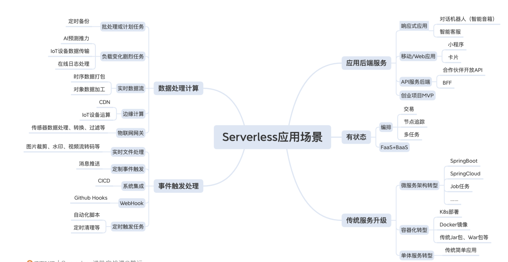3、serverless的分类
3.1 3个维度
函数计算（FaaS）：面向函数，用户只需关注函数层级的代码，用于解决轻量型、无状态、有时效的任务；
Serverless 应用托管：面向应用，用户只需要更关注应用本身，与微服务结合，它融合应用治理、可观测，降低了新应用的构建成本、老应用的适配改造成本；
Serverelss 容器服务：面向容器，在不改变当前 Kubernetes 的前提下，由于不再需要关注节点，大大提升了前期资源的准备过程，降低了维护成本，使得应用的全生命周期管理更高效。
3.2 狭义与广义
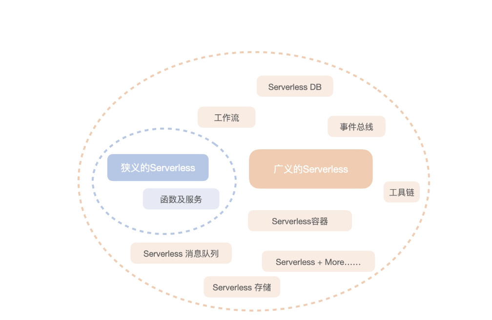3.2.1 狭义:FAAS
FaaS（Functions as a Service）函数即服务，FaaS 是无服务器计算的一种形式，当前使用最广泛的是 AWS 的 Lambada。
FaaS 本质上是一种事件驱动的由消息触发的服务，FaaS 供应商一般会集成各种同步和异步的事件源，通过订阅这些事件源，可以突发或者定期的触发函数运行。
3.2.2 广义:FAAS+BAAS+消息+DB+工作流
BaaS（Backend as a Service）后端即服务，一般是一个个的 API 调用后端或别人已经实现好的程序逻辑，比如身份验证服务 Auth0，这些 BaaS 通常会用来管理数据，还有很多公有云上提供的我们常用的开源软件的商用服务，比如亚马逊的 RDS 可以替代我们自己部署的 MySQL，还有各种其它数据库和存储服务。
工作流： 对函数的编排。
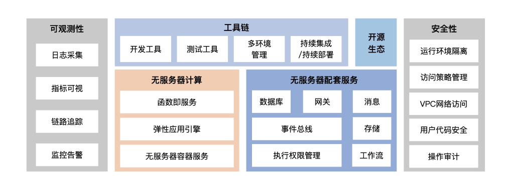
FAAS函数及服务
1. 基本流程
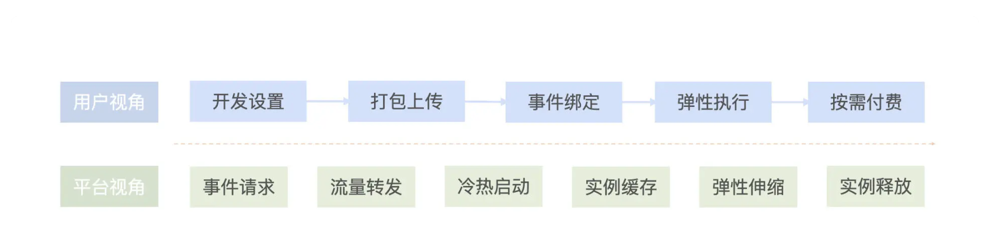1.1 用户侧
函数整个生命周期会经过“开发设置”“打包上传”“事件绑定与触发”“弹性执行”“实例销毁”五个过程。如下图：
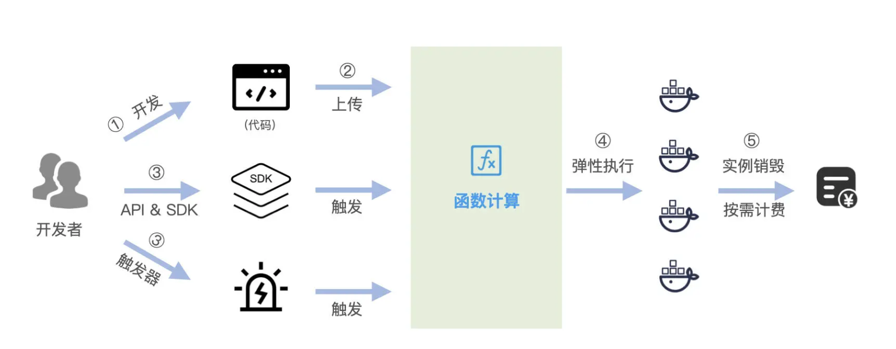1.2 服务侧
- 提交：当我们上传代码到 FaaS 平台后，后端服务会将代码包上传到对象存储中，并将函数相关信息，包括函数代码链接、Runtime 信息、运行内存、超时时间等信息存储起来。当我们再次修改函数相关信息，或者在线编写函数代码的时候，FaaS 平台会将存储好的代码和附属信息读取出来，展示在界面上，供你修改。如图：
- 运行：事件的请求，首先会到达路由服务，路由服务在缓存 Cache 中查看是否有准备就绪的实例。如果有就绪的实例，也就是热启动，直接使用该实例执行函数即可。如果没有就绪的实例，就会进入冷启动过程。函数计算引擎会启动容器的初始化流程，做一些准备工作：下载函数的代码包或者镜像、准备网络环境、加载运行时 Runtime，进而执行函数，并将实例信息放入到 Cache 中，下次请求再过来的时候，就进入热启动流程。
执行完毕之后，实例会保留一定时间（通常是 1-2 分钟），随后被回收。以上是正常的执行流量，当流量突增到一定阈值的时候，函数计算服务会快速扩容实例来满足提升的并发量。而空闲的实例太多的时候，也会缩容实例。
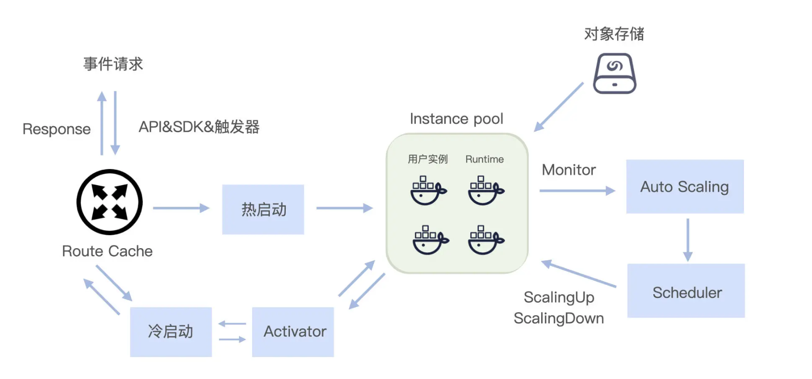1.2.1 流量转发：热启动和冷启动
首先，当 HTTP 事件请求到来之时，流量转发服务负责接收转发请求，也就是图中的 Route 服务。当 Route 接收到请求后，首先就要在自己的缓存 Cache 里查看是否已经存在函数和实例的对应信息。如果有，那么根据存储的信息，直接在实例池（instance pool）中获取执行实例，这时请求就以热启动方式被执行。具体什么是热启动呢？就是当你的函数执行完成后，容器实例会保留 1-2min 的时间，如果此时触发执行函数，那么无需新增实例和执行函数 runtime 的挂载，直接复用。因此它的响应速度要快得多。
如果找不到相关的信息呢？那么就会通过一个类似激活器（如 Activator）的组件，来创建并申请一个实例，执行本次请求，接着，将实例的相关信息存储到 Route 的缓存中，这就是冷启动的执行过程。
启动的操作包括实例调度和容器创建、下载并解压代码、准备函数执行环境、挂载用户代码、VPC 网络准备、初始化运行时和用户代码，这一系列过程结束后，函数才开始执行。所以冷启动的消耗时间受到很多因素的影响，主要包括：不同语言的冷启动时间不同：一般 GoLang、Python 的速度较快，而 Java 的速度相对较慢一些。
代码包大小：下载解压代码的过程在冷启动过程中比较耗时，一般体积越大，耗时越多。容器创建速度和 VPC 网络的准备：这个过程的耗时往往取决于云服务商，不同平台的速度也是不一样的。当然，各云厂商对于冷启动也在不断地优化，推出了预留实例、通过缓存加快代码下载速度、VPC 代理和 IP 隧道技术等方式来解决冷启动问题。
你也可以通过一些方式来自行解决，例如：精简代码包，减少掉一些不必要的配置和依赖。用预热请求的方式来确保代码实例常驻在容器池中，比如用定时器触发代码实例进行一个非常快的空响应。选择冷启动时间较少语言，尽量避免使用 Java 等启动较慢的语言运行时。尽量选择较大的内存：函数的内存越大，冷启动速度越快。
1.2.2 动态扩缩容
扩容：
当我们首次通过 HTTP 触发器请求的时候，此时由于函数实例池里面没有已经加载好的 Pod，需要进行一个从 0 到 1 的容器扩容过程。当执行结果返回后，一般 FaaS 平台会将函数实例保留一段时间再进行销毁。如果被保留的时间段内有请求再次进来，那么就可以直接复用，不需要扩容。但如果此时并发超过我们前面设置的 1 次请求，函数计算引擎监听到相关指标后，就会自动扩容。
扩缩容算法包含 Node 级别和 Pod 级别的扩缩容。Node 和 Pod 一般会监控自定义的指标，如果指标有变化，会进行相应的扩缩容操作。
例如 ，Kubernetes 中的 HPA 扩缩容算法，通过安装一个 metrics-server 的监控组件，提供 HPA 和基础资源监控的能力。对 CPU 和 Memory 等指标进行监控，保证其维持在可控的范围内。而 Node 级别的扩缩容，一般会根据 Node 的整体使用率，来判断 Node 数量是否需要扩容。一旦需要扩缩容，就会向 Scheduler 发送扩缩容请求，Scheduler 调用相关接口执行扩容操作。
缩容：
当函数执行完毕，并且在 1~2min 内没有再次执行时，FaaS 平台就会回收该实例。
1.2.3 runtime
Runtime 是为函数提供运行框架，并真正执行函数的进程。云厂商一般将不同语言的执行环境打包为基础镜像。容器镜像包含多层镜像，第一层基础镜像为 ubuntu、alpine 之类的文件系统；第二层镜像为代码的依赖库，如 Python 代码需要使用 pip 库 , Node.js 代码需要使用 npm 库。也有的函数计算引擎，直接支持 Docker 镜像来运行。
例如 Python3-runtime 通常会开放一个 handler 的接口给开发者实现具体的业务逻辑。当一次请求到来之时，Python 的运行时会通过动态加载的方式对你刚才定义的文件方法进行调用。
对于编译型语言，需要引入 FaaS 平台提供的代码库，基于一套现成的框架来开发业务逻辑代码，不过思路一样，只是运行的方式不一样罢了。
2. event事件
事件本身的含义就是简单的触发条件触发动作
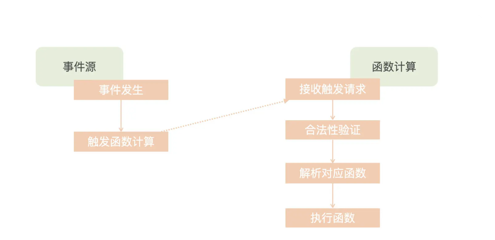3. 冷启动
3.1 冷启动的步骤：
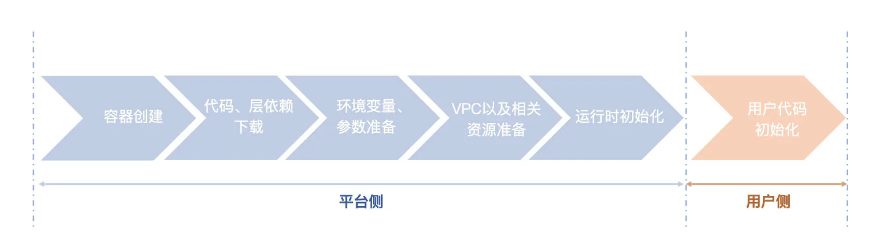第一步，容器创建。这一步通常会体现在扩缩容过程，当所有容器实例都在处理请求时，就需要向集群申请创建新的容器。这里需要提一下，函数计算平台通常会支持多种语言的运行时，这些运行时一般来说会打包一个镜像，以 DeamonSet 的方式运行在 Kubernetes 集群中。我们在冷启动的时候，会根据不同的参数请求，动态挂载所需的运行时到对应的运行路径下。这个运行的过程，我没有体现在图上，而是把它算作资源调度层面了。
第二步，代码、层依赖下载。这一步应该是整个冷启动耗时比较长的过程。函数计算本身并不具备持久化的能力，代码包和层依赖通常都是从其他存储服务端拉取。因此，这一步的耗时会受到用户上传代码包大小、网速等因素的影响。当然，代码包通常是压缩包的形式，下载到本地后，还需要解压。
第三步，环境变量、参数文件准备。主流的函数计算平台往往提供了环境变量注入的能力，这个过程就发生在冷启动阶段。除此之外，运行时以及容器本身可能还需要准备一些参数配置文件等，这个过程耗时相对较短，我们可以暂时不关注这块的优化。
第四步，用户 VPC 以及相关资源准备。如果用户还为函数接入了私有网络，那么还需要为容器进行一些 VPC 网络打通的初始化工作。同时，如果用户使用了类似分布式文件系统这类功能，还需要进行挂载，也会产生一部分额外耗时。
第五步，运行时初始化。通常指的是云厂商标准的 Runtime 环境的启动过程。这一步受编程语言类型的影响比较大，比如 Java 类型的代码由于要启动 JVM，启动相对其他语言就比较慢。
第六步，用户代码初始化。这一步有的时候和运行时初始化容易混淆，为什么这么说呢？比如编译型的语言，打包后就是一个完整的可执行程序，在运行时启动的时候，就已经有一部分工作加载起来了。那么，如果是解释型语言，我们就可以把它理解为用户代码包的加载过程。因此，针对这一步，我们可以理解为用户的自定义业务逻辑代码的加载，某些业务逻辑 init 的过程，比如写在 Handler 之外的数据库连接的创建、Handler 方法内的缓存初始化等。
3.2 影响冷启动时长的因素有哪些？
资源调度和容器创建过程： 一般在秒级别时间完成；
代码和依赖层的下载过程：取决于代码大小以及是否有加速，一般从毫秒到秒级别不等
VPC 网络的打通过程：主要是弹性网卡和路由下发耗时，通常在秒级别；
运行时与用户代码初始化过程：和用户比较贴近，依据不同的语言，启动时间会有所影响，大概在毫秒到秒之间不等。
3.2.1 优化
3.2.1.1 平台侧
资源调度和容器创建我们知道，容器启动时一般会先检查本地有无相关镜像，如果没有的话，需要从远端仓库拉取，而函数所处的容器环境通常都是一个 Alpine 或者 Ubuntu 之类的基础镜像，应 用层的资源对象则会基于基础镜像之上进行打包，如果出现远端拉取的情况，还是比较耗时的。
传统容器运行需要将全量的镜像数据下载后再解压，一方面导致容器启动耗时较长，另一方面也可能因为集群规模过大，下载解压环节造成了较大的网络、磁盘读写压力，进而导致大规模容器启动不符合部署预期。但实际上在启动容器时，可能又仅使用容器镜像内的部分数据。
镜像加速要解决的就是这种传统容器需要提前下载镜像再启动导致耗时较长的问题。一般业界会从两个路径入手。
按需加载：使用加速镜像版本，配置加速规则和标签，通过按需加载的模式，免于全量下载镜像，避免带宽浪费和分发效率的影响；
P2P 加速：利用计算节点的内网带宽资源，在节点之间分发镜像，降低镜像仓库的压力。另外，头部的云厂商，还会通过启用多镜像仓库，进一步缓解单仓库的存储和服务压力，来进一步提升资源调度和下载速度。(https://github.com/dragonflyoss/Dragonfly2)
用户实例提前预加载:
1、基于函数互相调用的场景进行提前预测
如下图所示，函数 A 调用 B 和 C，我们可以根据它们之间的调用拓扑关系，提前进行预启动函数 B 和 C。
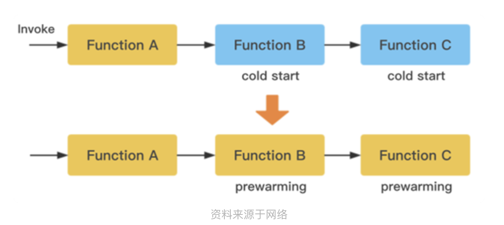2、基于流量预测
如果版本 1 的流量比例是不足 100% 的，那么我们可以推测另一个占据流量的版本 X，也应该加载起来。这种方式，在腾讯函数计算中也公布过。
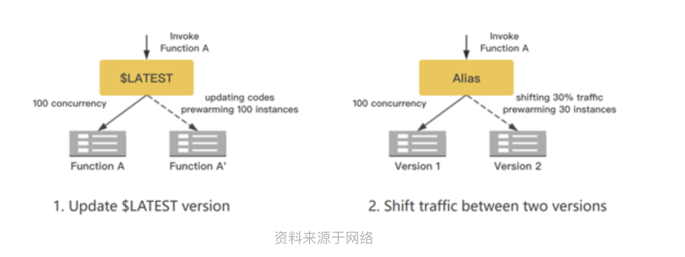3.2.1.2 用户侧
- 合理控制代码包的大小；
- 选择性能较高的运行时；
- 成本可控范围内合理使用预留实例；
- 定时任务激活延时敏感较高的函数实例；
- 本地缓存的的合理利用。
4.扩缩容
4.1 HPA
HPA(HorizontalPodAutoscaler) 是k8s原生的资源
1 | The HorizontalPodAutoscaler is implemented as a Kubernetes API resource and a controller. The resource determines the behavior of the controller. The horizontal pod autoscaling controller, running within the Kubernetes control plane, periodically adjusts the desired scale of its target (for example, a Deployment) to match observed metrics such as average CPU utilization, average memory utilization, or any other custom metric you specify. |
流程：
1、定期从 k8s 控制面获取资源的各项指标数据（CPU 利用率、内存使用率等）
2、根据这些指标数据将资源数量控制在一个目标范围内。
在 K8s 中，不同的 Metric 会由对应的 Metrics Server 持续采集（Heapster 或自定义 Metrics Server），HPA 会定期通过 Metrics Server 的 API 或者聚合的 API Server 获取到这些 Metric 指标数据（CPU 和 内存使用情况），从而根据你自己定义的扩缩容规则计算出 Pod 的期望个数，最后，根据 Pod 当前的实际数量对 RC/Deployment 做出调整，使 Pod 达到期望的数量。
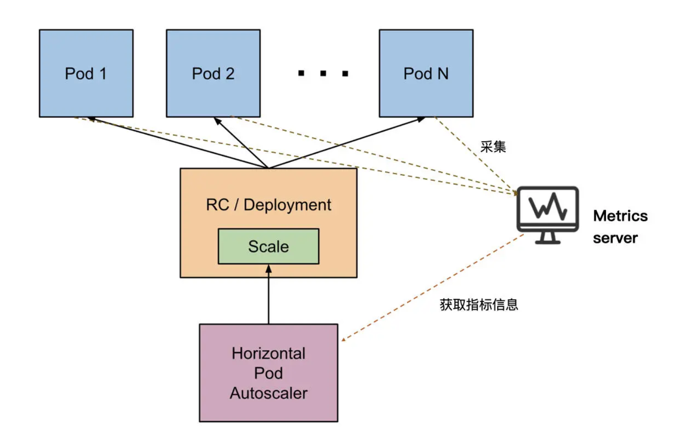4.2 KPA
HPA的缺陷：因为 Serverless 语义下的动态扩缩容是可以让服务缩容到 0 的，但 HPA 不能。HPA 的机制是通过监测 Pod 的 Metrics 指标来完成 Deployment 的扩缩容，如果 Deployment 的副本数缩容到 0，流量没有了，指标为 0，那 HPA 也无能为力了。
KPA 流程：
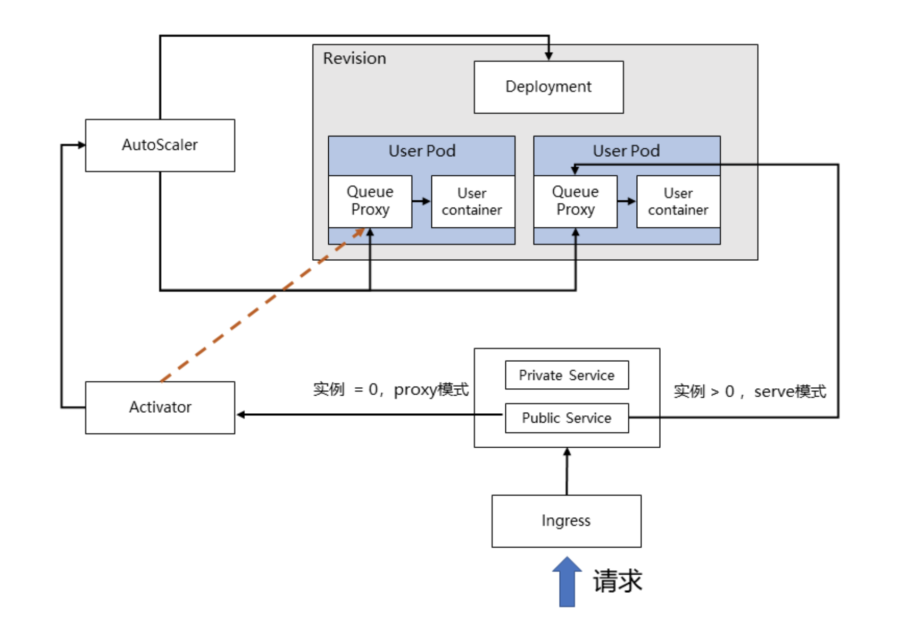4.2.1 流量指标的收集
在 Knative 中，Revision 代表一个不变的、某一时刻的代码和 Configuration 的快照。每个 Revision 会引用一个特定的容器镜像和运行它所需要的任何特定对象（例如环境变量和卷），再通过 Deployment 控制函数实例的副本数。
和我们之前介绍的 Node 维度扩缩容机制中的函数实例不同，这里，可以看到每个pod中都有两个容器：Queue Proxy 和 User Container。
其中，User Container是部署和启动我们自身业务代码的容器，每个pod都会被以 Sidecar 的方式将 Queue Proxy 注入，也就是在原来的业务逻辑上再新加一个抽象层。Queue Proxy 作为每一个 User Pod 的流量入口，负责限流和流量统计的工作。
每隔一定时间，AutoScaler 都会收集 Queue Proxy 统计的流量数量，作为后续扩缩容的重要依据。
4.2.2 实例数量的调整
当收集到流量的指标后，AutoScaler 就需要根据指标调整实例的数量了。Autoscaler 会通过改变实例的 Deployment 来决定实例最终的个数，以便确定扩容出来多少个 Pod。
简单的算法，就是按照将当前总的并发数平均划分到期望数量的实例上，使其符合设定的并发值。
这里简单举个例子，比如当前总并发数为 100，设定的并发值为 10，那么最终调整出的实例数量就是：100/10=10 个。当然，扩缩容的实例数量还会考虑到系统的当前的负载和调度周期等因素。
4.2.3 KPA从0到1的过程
当 AutoScaler 将函数实例缩容为 0 时，会控制 Activator 作为实例为 0 时的流量接收入口。Activator 在收到流量后，会将请求和信息暂时缓存，并主动告知 AutoScaler 进行扩容，直至成功扩容出函数实例，Activator 才会将暂存的流量转发到新生成的函数实例上。
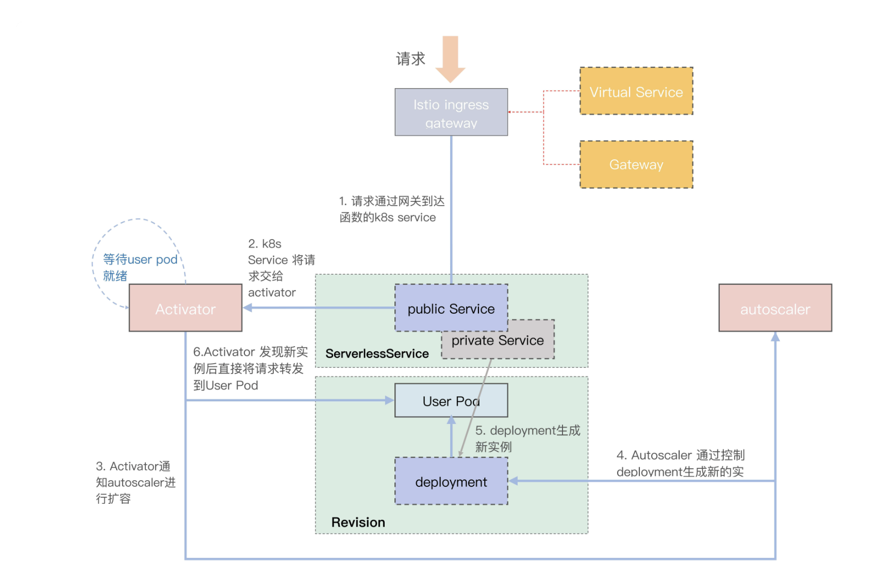步骤 0：这里要完成的是准备工作。当你打包好函数镜像，创建好 Knative Service 之后，Knative 会根据定义来创建 Route、Configuration（cfg）资源，然后 cfg 会创建对应的 Revision 版本。Revision 又会创建 Deployment 提供服务。
步骤 1：当请求到达 Istio Ingress Gateway 后，Istio Ingress Gateway 会根据 Gateway 和 virtualService 配置信息，将请求转发给 Public Service。
步骤 2：由于此时集群中还没有 User Pod（图中的 User Pod 需要等到 AutoScaler 扩容后才有），而 Public Service 的 EndPoints 配置的是 Activator，所以请求接下来会交给 Activator 处理。
步骤 3：Activator 会将收到的请求暂存，同时统计请求对应 Revision 的实际流量并上报给 AutoScaler。另外，Activator 还会不断监听 Private Service，检查是否已经存在 User Pod 了。
步骤 4：AutoScaler 根据流量情况控制对应 Revision 的 Deployment 来实现 User Pod 的扩容。在冷启动过程中，会至少保证创建一个 Pod 出来。
步骤 5：Deployment 创建新的 User Pod，同时会更新 Private Service 的 EndPoints，将 Private Service 的 EndPoints 指向新生成的 User Pod。
步骤 6：Activator 检测到 Private Service 关联的 EndPoints 后，会将请求直接转发到新的 User Pod。User Pod 收到请求后，就会执行业务逻辑。
5.工作流
5.1 定义
1 | 通过 DSL 来定义一组结构和模型，它以 JSON 或 YAML 的形式存在，服务引擎会根据定义的蓝图来进行调度和执行任务。 |
5.2 工作流具体
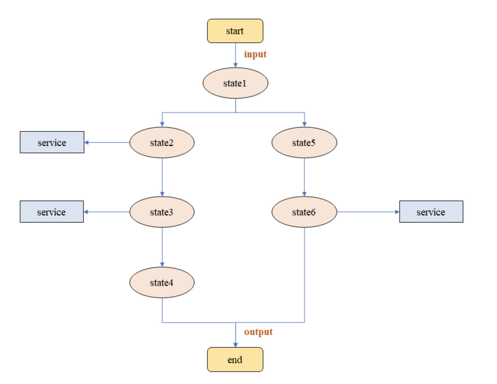包含了一下特性：
每个 State 状态是一个工作节点
工作节点可以关联服务
每个节点有明确的输入和输出
腾讯云的工作流
https://cloud.tencent.com/document/product/1272/46324
5.3 DSL （Domain Specific Language）
定义：
是用来描述和定义业务逻辑的。工作流执行时，会根据你定义的这套逻辑执行。在基本构成的示意图中可以看到，一次执行包含了多个状态，这些状态可以是简单的一次操作，在 DSL 中，就会表示为如下的状态类型。
Event：会在收到指定触发类型的事件后（比如之前课程提到的 S3 的对象存储事件），去执行调用动作（调用动作在 DSL 中被称为 action），比如调用某个云函数。这里需要注意的是，触发事件需要严格满足 Cloud Events 格式协议；
Operation：也会执行调用动作，但是和 Event 状态不同的是，Operation 不需要收到事件触发，而是可以主动执行调用动作；
Sleep：可以将当前执行挂起，并设置等待时间，类似于线程中的 Sleep 操作。等待结束后，则恢复执行过程；
Inject：可以向工作流的输入数据中注入一些静态数据，然后传递给下一个状态。
Switch：类似编程语言中的 switch 关键字，会通过 eventConditions 关键字来定义多个选项分支，并根据一些筛选条件决定下一状态。在所有条件都不满足时，defaultCondition 还可以作为默认下一状态；
Parallel：包含一系列分支，通过 branch 关键字定义。但和 Switch 不同的是，这些分支的子状态是并行执行的；
ForEach：类似于编程语言中的迭代器，一般来说，该状态的输入都是数组或者集合的形式，然后循环执行迭代逻辑。
举例：（腾讯云TCSL）
https://cloud.tencent.com/document/product/1272/51544
1 | { |
编译：tekton
https://github.com/tektoncd/pipeline